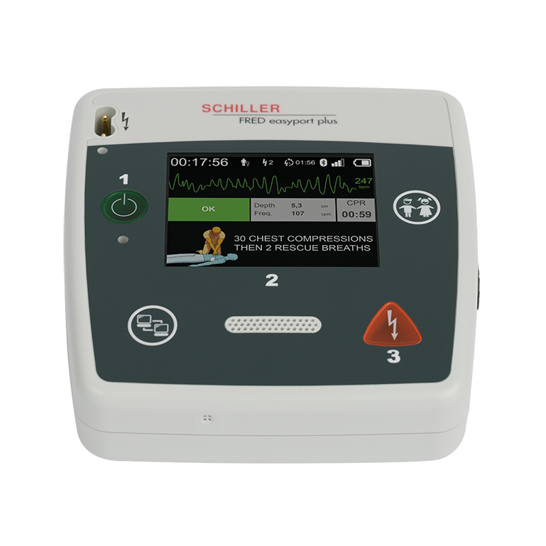

Användning på barn
FRED easyport plus kan användas på barn under 8 år eller med en vikt under 25 kg. Det är viktigt att anpassa inställningarna och elektroderna för att säkerställa korrekt och säker behandling.
Så här gör du:
- Aktivera barnläge:
Tryck på knappen märkt (A) PATIENT två gånger innan elektroderna ansluts.
Detta växlar enheten till barnläge med lägre energinivå. Patientknappen lyser när barnläget är aktiverat. Mäniskosymbolen (B) växlar från stor till liten. - Använd barnanpassade elektroder:
Om tillgängligt, använd elektroder avsedda för barn. Dessa har mindre storlek och anpassad kontaktarea. - Placering av elektroder:
– Fram-bak-position: Placera en elektrod mitt på bröstet och en på ryggen mellan skulderbladen.
– Detta används om vanliga positionen (som på vuxna) inte får plats. - Följ röstinstruktioner:
Enheten guidar dig genom hela processen även i barnläge.
Energinivå vid defibrillering (barn):
När barnläge är aktiverat anpassar FRED easyport plus automatiskt energimängden för att vara säker och effektiv vid behandling av barn.
- Första stöt: 50 Joule
- Andra stöt: 70 Joule
- Tredje och efterföljande stötar: 85 Joule
Enheten ökar energin successivt vid varje stöt för att förbättra behandlingsresultatet hos barn, utan att användaren behöver göra något manuellt.
Viktigt:
- Använd alltid barnläge för patienter under 8 år eller < 25 kg.
- HLR görs enligt barn-HLR-riktlinjer – 15:2 om man är två personer, 30:2 om man är ensam.
- Om barnläge saknas – använd vuxenläge, det är bättre än att inte defibrillera alls.
